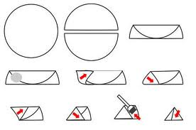

Samoussas à pleins de bonnes choses

Ici vous trouverez la recette de délicieux samoussas aux crevettes, avocats, citron vert et oignon rouge.
Aujourd’hui j’avais très envie de manger et de vous proposer une nouvelle recette de samoussas! L’avantage avec les samoussas c’est qu’on peut vraiment y mettre ce que l’on veut!!! Ici vous trouverez d’ailleurs mes samoussas chèvre miel. Ces petits « beignets » sont assez simples à réaliser et sont très sympas à partager en apéro ou en entrée (ou carrément en plats avec une bonne salade si on en fais pleins!!). Le gros HIC et qui peut en décourager certains c’est clairement le pliage^^. Mais une fois qu’on en a raté un ou deux et qu’on a pris le coup de main ça va très (très) vite!
Pour cette nouvelle recette j’avais envie de quelque chose d’assez simple et de « léger« . Je vous propose donc une recette de samoussas que j’ai farci de crevettes, d’avocats, d’oignon rouge, de coriandre le tout dans un sauce au citron vert. Comme vous pouvez le constater cette recette ressemble beaucoup à mon tartare de saumon car j’adore tout simplement l’association de toutes ces saveurs!
Dans cette recette j’utilise du beurre clarifié que je trouve plus sain mais libre à vous d’en utiliser! Pour ceux que ça intéresse j’ai fait un petit article sur le beurre clarifié ici
Je vous laisse découvrir cette recette en espérant qu’elle vous plaira! Bonne journée a tous!
Ingrédients
- Avocat - 1
- Crevettes - 250g (dépend de la tailles de vos crevettes)
- Oignon rouge - 1/2
- Citron vert - 1
- Coriandre - 1 petit bouquet
- Huile d'olive - 3cas
- Beurre clarifié - 20g
- Feuilles de brick - 9
Instructions
- Dans un récipient, préparer la marinade: mélanger le jus d'un citron vert, l'huile d'olive et le demi oignon rouge préalablement coupé en petit dés
- Décortiquer les crevettes et bien les nettoyer
- Vous pouvez les couper en morceaux mais moi j'ai choisi de les garder entières
- Ajouter les crevette dans la marinade
- Dénoyauter et éplucher l'avocat puis couper le en petits dés
- Ajouter l'avocat à la marinade
- Ciseler la coriandre et l'ajouter au mélange
- Laisser au minimum 30 min au réfrigérateur (plus si vous pouvez patienter)
- Dans une casserole, faire fondre le beurre clarifié
- Badigeonner tous les samoussas du beurre fondu
- Enfourner à 180° pendant 10 minutes
- Dan l’idéal servir encore chaud c'est délicieux!



Les tips de la communauté
Recette très bien accueillie pour sa garniture savoureuse et originale. Les lecteurs apprécient le mariage avocat-crevettes-citron. Quelques commentaires mentionnent que le pliage demande un peu de pratique mais devient facile une fois la technique maîtrisée.
Astuces
- Mettre la farce avant de rabattre la feuille sur elle-même pour éviter les débordements
- Accompagner d'une sauce yogourt grec avec coriandre, menthe, sel et poivre
- Ajouter une touche de citron vert dans la garniture pour plus de fraîcheur
Variantes suggérées
- Alternative avec sauce yogourt-coriandre-menthe à la place de la sauce classique